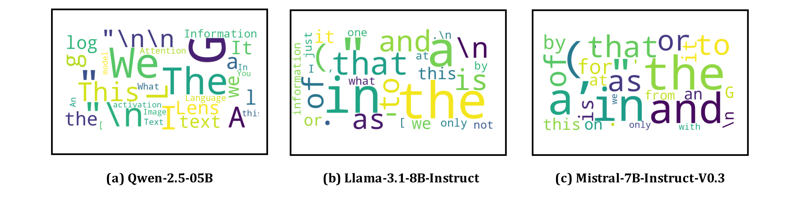
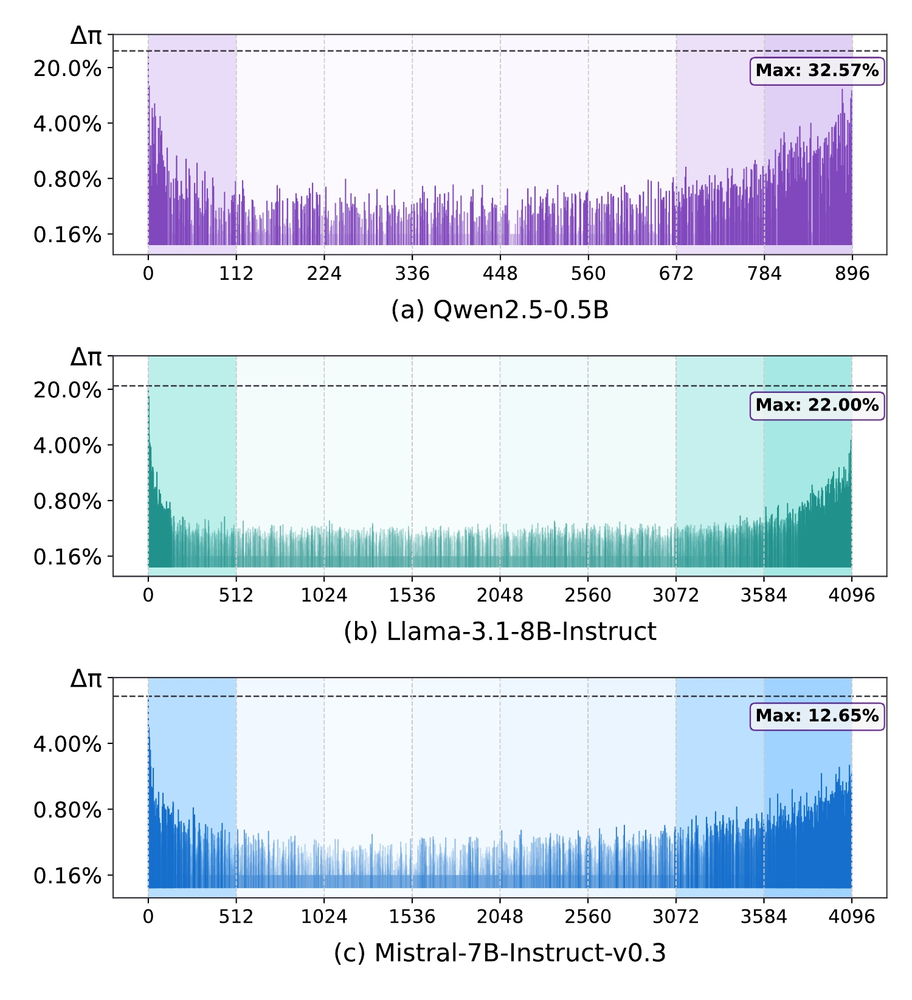
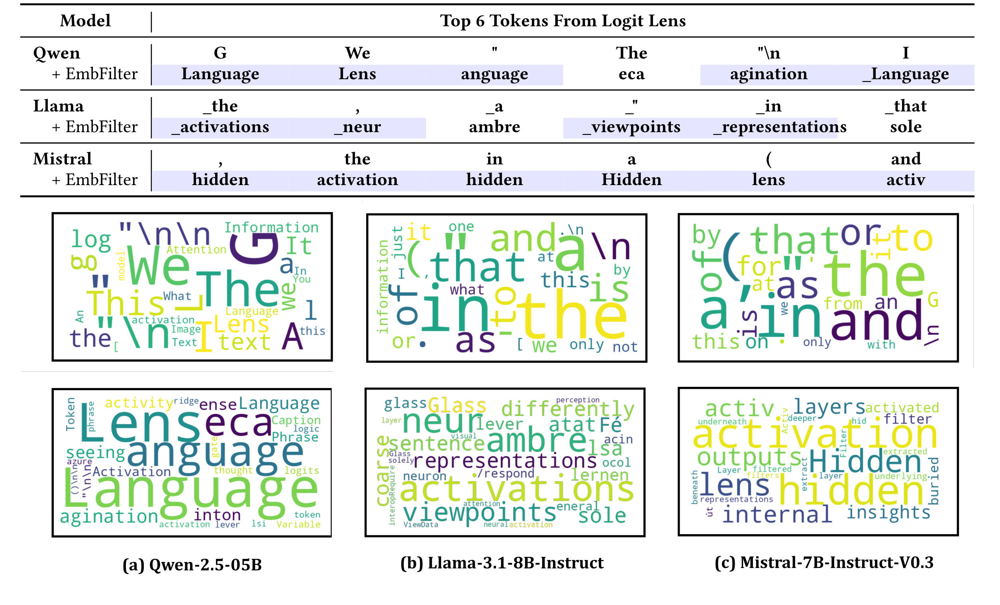
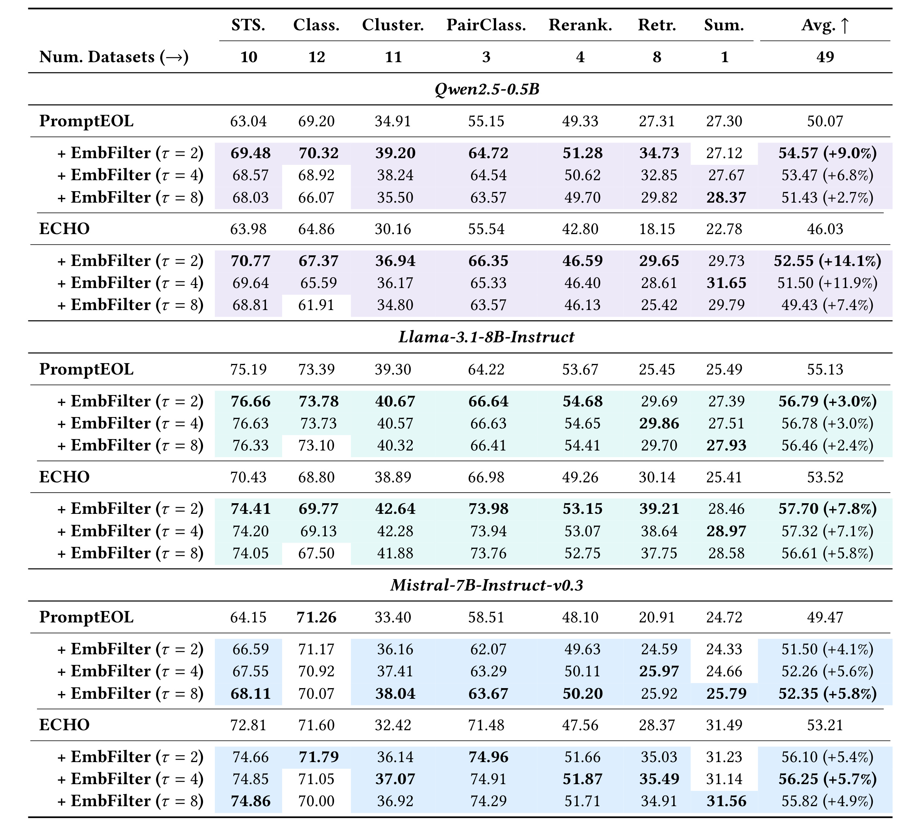
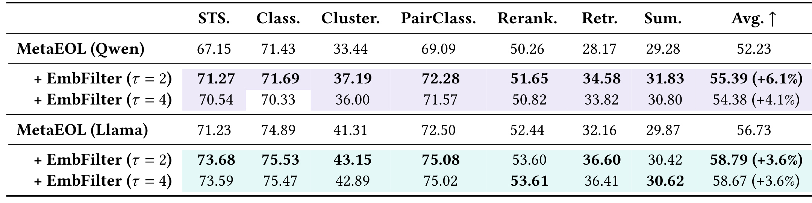
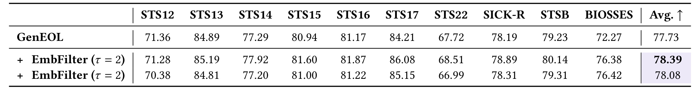
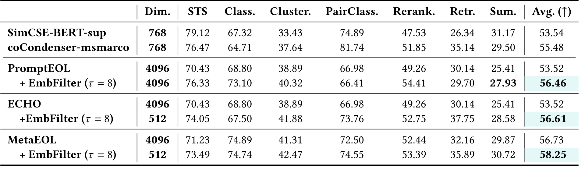
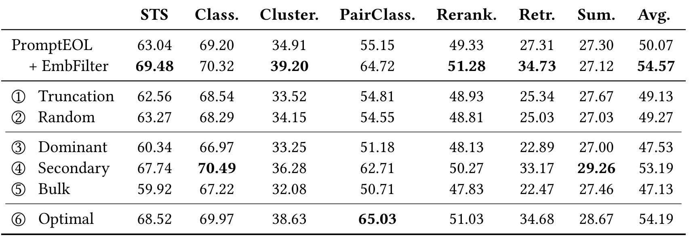
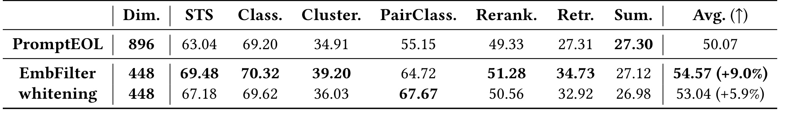
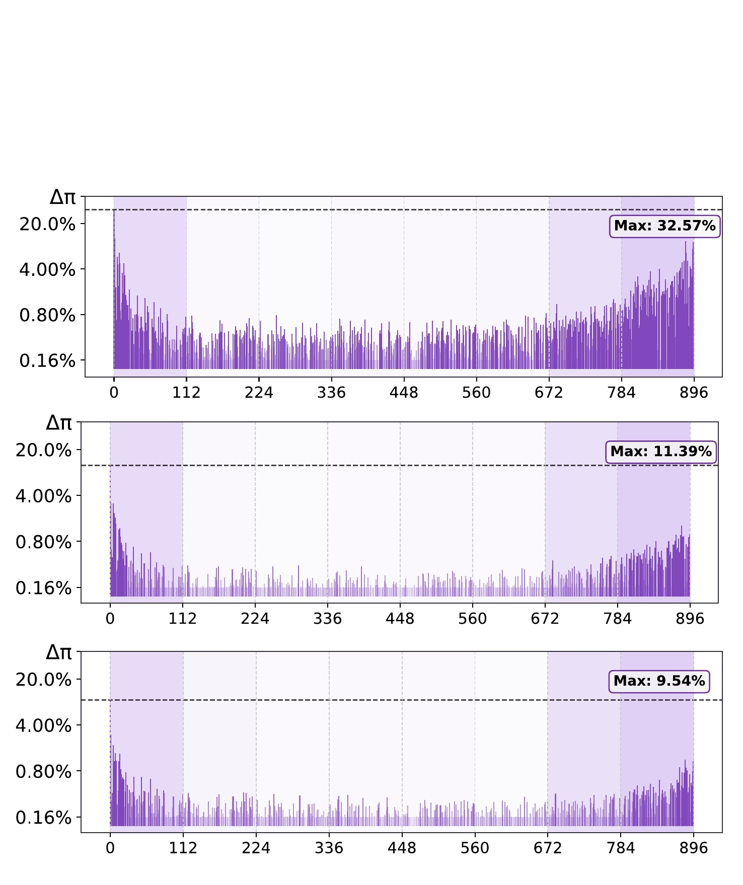

Your UnEmbedding Matrix is Secretly a Feature Lens for Text Embeddings
- 主类别：LLM
- 论文入口：arXiv:2606.07502
- 方法简称：EmbedFilter
- 作者与机构：Songhao Wu、Zhongxin Chen、Yuxuan Liu 来自中国人民大学高瓴人工智能学院；Heng Cui、Cong Li 来自 Lenovo Group Limited；Rui Yan 来自武汉大学。论文致谢中说明该工作得到 Lenovo Group 支持。
- 代码/项目页：CentreChen/EmbFilter，本轮以
curl -I -L核验 GitHub 页面返回 HTTP 200。 - 版本与边界：arXiv:2606.07502v1，PDF 共 10 页。本文数值来自 PDF 表格转述，未重新运行 MTEB、MetaEOL、GenEOL 或 whitening 实验。
1. 背景和问题
这篇论文要解释一个很具体、但在使用 LLM 做零样本文本 embedding 时经常被绕开的现象：LLM 明明能在生成、问答、推理任务中表现出很强的语义能力，直接把它的隐藏状态拿来做句向量时却不稳定，尤其在 MTEB 这类大规模文本 embedding benchmark 上，原始 LLM embedding 与专门训练的 embedding 模型之间仍有差距。作者没有把问题归因于“prompt 不够好”或“模型没有针对 embedding 微调”，而是把 LLM 的 unembedding matrix 拿出来当作一个 feature lens，观察 embedding 在词表空间里到底会指向哪些 token。
核心观察来自 Logit Lens：把文本 embedding 投影回 vocabulary space 后，top token 常常不是输入文本中的关键信息，而是 the、逗号、换行、引号、in、and 这类高频但语义含量很低的 token。论文认为这不是简单的可视化噪声，而是 LLM embedding 的一个结构性偏置：隐藏状态里有一部分子空间在持续写入训练语料中的“平均 token”或 commonality signal，这会把不同句子的表示拉向相似方向，使真正区分语义的细节被压住。这个解释与已有的 embedding anisotropy 观察一致：句向量不是均匀铺在空间里，而是挤在一个窄锥里，导致不同样本之间余弦相似度过高。
EmbedFilter 的价值在于它把这个偏置定位到 unembedding matrix 的谱结构上。作者使用 unembedding matrix 的右奇异向量来分析 hidden space，发现最小奇异值和最大奇异值附近的 edge spectrum subspace 对高频 token logits 的影响最大。换句话说，LLM 的词表输出矩阵不只是最终预测 token 的投影头，它还携带了一个可用于诊断 embedding 的谱坐标系。只要把与 frequent-token signal 相关的边缘谱方向滤掉，保留中间 bulk spectrum，embedding 就可能更接近语义内容本身。
这一点对工程使用很关键。许多训练免费或弱监督 embedding 方法喜欢依赖 PromptEOL、ECHO、MetaEOL、GenEOL 等 prompt engineering，让 LLM 把句子语义压到某个位置的 hidden state 中。但如果 hidden state 里天然混入了频繁 token 的共性子空间，prompt 只能改善输入格式，无法从机制上清理这个方向。EmbedFilter 提供的是后处理：不改 LLM 参数、不额外训练、不需要标注数据，直接用模型已有的 unembedding matrix 构造一个线性变换，对抽出的句向量做过滤。
需要注意的是，论文仍是 arXiv/ACM 模板形态，会议信息和 DOI 仍是 ACM 模板文本；本文的实验表格是作者报告的结果，本轮没有复算。因此这份笔记把它作为“机制解释 + 可复现实验线索”来读，而不是把所有百分比提升当成已经独立确认的工程事实。真正值得带走的是三个问题：第一，Logit Lens 看到的频繁 token 是否能解释 LLM embedding 的语义退化；第二，edge spectrum 是否确实是频繁 token 的主要承载区域；第三，滤掉这个区域后，性能、维度和检索成本是否同时受益。
从论文位置看，这项工作也处在 LLM embedding 的两个路线之间。一条路线继续做训练或对比学习，用标注、NLI、检索数据把模型拉向 sentence embedding；另一条路线尽量保持训练免费，只通过 prompt、pooling、重复输入或后处理把原模型的语义能力取出来。EmbedFilter 属于第二条路线，但它比普通 prompt trick 更接近机制分析：它先解释为什么原始表示会被频繁 token 拉偏，再把这个解释变成一个线性算子。这意味着后续复现时不能只看最终 MTEB 平均分，还要复查 Figure 1 到 Figure 4 的机制链是否在自己的 backbone 上成立。
对业务检索来说，这个问题也不是纯学术细节。向量维度、索引大小、召回速度和语义区分度经常相互制约；一个 4096 维 LLM embedding 即使准确，也可能因为索引成本过高而难以直接上线。本文把频繁 token 子空间过滤和维度降低绑定起来，给出一种“清理无信息方向同时压缩向量”的可能性。这个设定比单纯换一个更大的 embedding 模型更值得关注，因为它可以作为现有 LLM 的轻量后处理层，也方便在离线侧快速做 ablation。
2. 方法
还有一个实现层面的细节需要提前说明：本文的过滤发生在 embedding 已经抽取出来之后，而不是在生成时改变 token logits。因此它不会影响 LLM 的文本生成行为，也不需要重新训练输出头。实现流程可以拆成离线准备和在线/批处理两段：离线阶段对目标 LLM 的 unembedding matrix 做 SVD，确定 $l_ au:r_ au$ 的 bulk 区间；在线或批处理阶段先按原有 PromptEOL、ECHO、MetaEOL 或 GenEOL 方式抽取 hidden-state embedding，再右乘 $V[l_ au:r_ au]$ 或等价的 $\Phi_ au$ 投影。这个拆分解释了为什么作者强调开销很小：最重的 SVD 可以预处理，后续每条样本只是线性变换。
符号解释：$X$ 是输入句子，$x_i$ 是 token，$P$ 是 pooling 函数，$h$ 或 $e_i$ 是抽出的句向量，$W_U$ 是模型 unembedding matrix，$V$ 是 $W_U$ 的右奇异向量矩阵，$V[i]$ 是其中第 $i$ 个谱方向，$\hat p$ 是用开放语料估计的 token 频率，$\hat h$ 是反推出的 average-token hidden state，$\Delta\pi(i)$ 衡量去掉某个谱方向后高频 token logits 的相对变化，$ au$ 控制过滤比例和输出维度，$U_F$ 表示被排除的 frequent-token edge-spectrum basis。后文所有公式都围绕这些对象展开。
2.1 从 LLM hidden state 到词表空间：Logit Lens 为什么能发现问题
论文先回到最普通的 LLM embedding 抽取范式。给定句子 $X=[x_1,x_2,\ldots,x_L]$，LLM 输出最后层 hidden states，再通过 pooling 策略 $P$ 得到一个 $d$ 维向量：
符号解释：$h$ 是最终句向量，$P$ 是池化策略，$\mathrm{LLM}$ 表示目标大语言模型的 hidden-state 计算。
如果把这个 $h$ 只当作句向量，我们通常会直接拿它做余弦相似度、检索、聚类或分类。但 LLM 原本还有一个 unembedding matrix $W_U\in\mathbb{R}^{|V|\times d}$，它负责把 hidden state 映射回 vocabulary logits。Logit Lens 的做法就是把中间表示直接乘上这个输出头，看它在词表上最像哪些 token。对生成模型来说，这相当于问：如果这个 hidden state 被直接拿来预测 token，它会偏好哪些词？
Figure 1 展示了这个诊断在 Qwen2.5-0.5B、Llama-3.1-8B-Instruct 和 Mistral-7B-Instruct-v0.3 上的结果。输入文本本身来自对 Logit Lens 的解释，包含 lens、activations、information 等内容词；但未经过滤的 embedding 投影后，三个模型的高概率 token 都集中在非常常见的功能词、标点和格式符号上。这说明句向量并不是没有信息，而是它在词表输出视角里被高频 token 的方向压住了。

这张图还说明一个容易忽略的点：Logit Lens 不是在评估句子任务分数，而是在暴露 hidden state 与词表输出头之间的对齐关系。如果 top tokens 长期被功能词占据，余弦相似度就容易受到语料平均方向的干扰。对复现者来说，第一步应在自己的 backbone 上重做这张诊断，而不是直接相信 EmbedFilter 的下游收益。只有当原始 embedding 同样出现高频 token 占优时，后续 edge-spectrum 过滤才有明确目标。
这张图的关键不在 word cloud 的美观程度，而在三列模型的共同模式：Qwen 里 We、The、换行和引号很突出，Llama 里 _the、逗号、_a、_in 占据前列，Mistral 里逗号、the、in、a、and 也类似。不同模型族、不同 hidden size 都出现这一现象，作者才进一步假设：LLM embedding 的语义不足可能不是某个模型的局部缺陷，而是 unembedding/hidden-space 几何里存在一个 frequent-token subspace。
2.2 用 unembedding matrix 的 SVD 定义谱方向
为了把这个现象从可视化变成可测量机制，作者引入 Logit Spectroscopy。先对 unembedding matrix 做奇异值分解：
符号解释：$W_U$ 是 unembedding matrix，$U$、$\Sigma$、$V$ 来自 SVD，本文主要使用 $V$ 的列向量作为 hidden-space 谱方向。
这里的 $V$ 是 hidden-state space 中的右奇异向量基。由于 embedding 本身也在 hidden space 中，$V$ 的每一列都可以看成一个方向：如果去掉 hidden state 在某个 $v_i$ 上的投影，再重新通过 unembedding matrix 看 logits 变化，就能估计这个谱方向对词表输出的贡献。论文使用的单方向过滤器是：
符号解释：$\Psi_i$ 是删除第 $i$ 个右奇异方向的过滤器，$I$ 是单位矩阵，$V[i]V[i]^\top$ 是沿该谱方向的投影。
这个式子可以理解为把 hidden state 沿第 $i$ 个右奇异向量的成分扣掉。如果扣掉某个方向后，高频 token 的 logits 大幅变化，那么这个方向就很可能参与了 frequent-token signal 的写入。与普通 PCA 或 whitening 不同，作者不是从 embedding 数据本身估计协方差，而是利用 LLM 训练好的输出矩阵来提供一个模型内部的坐标系。
这一步非常重要，因为 EmbedFilter 后面不需要校准数据。很多 embedding calibration 方法需要额外语料来估计均值、协方差或 whitening 矩阵；本文则认为，unembedding matrix 在预训练过程中已经接触了大量 token 统计，里面隐含了可复用的词频/语义结构。用它的谱方向过滤 embedding，相当于把 LLM 自带的输出统计反向用于句向量清理。
2.3 反推出 average token，再定位 frequent-token edge spectrum
作者接着构造一个“平均 token”的 hidden representation。标准推理中，hidden state 经过 unembedding 后得到下一个 token 的概率分布：
符号解释：$q$ 是词表概率分布，$hW_U^\top$ 是把 hidden state 映射到 vocabulary logits 的步骤。
如果忽略 softmax 的共享偏置项，可以把 logits 近似写成 $\log(q)$，再用 $W_U^\top$ 的 Moore-Penrose pseudo-inverse 反推 hidden state。由于真实 LLM 训练语料不可见，作者用 RedPajama 估计 token frequency $\hat p$，于是得到：
符号解释：$\hat p$ 是估计词频，$W_U^+$ 是 Moore-Penrose pseudo-inverse，$\hat h$ 是 average-token representation。
这个 $\hat h$ 就是论文里的 average token representation。它不是某个真实输入句子的 embedding，而是用训练语料频率近似出来的“词频平均状态”。如果 raw text embeddings 被这个平均状态吸引，那么去分析 $\hat h$ 的谱方向，就能找到哪些 hidden-space directions 在写入频繁 token。
Logit Spectroscopy 的度量是 $\Delta\pi(i)$。设 $V^+$ 是训练语料中 top-k 高频 token 的集合，$\hat w_j$ 是 average token 原始 logits，$\tilde w_j^{(i)}$ 是去掉第 $i$ 个谱方向后的 logits，论文用下面的相对差异衡量第 $i$ 个方向对高频 token 的影响：
符号解释：$V^+$ 是高频 token 集合，$\hat w_j$ 是原始 average-token logit，$\tilde w_j^{(i)}$ 是删除第 $i$ 个谱方向后的 logit。
Figure 2 给出 Qwen、Llama、Mistral 三个模型的 $\Delta\pi$ 分布。高峰出现在谱的两端：最小奇异值附近和最大奇异值附近都更敏感，中间 bulk region 相对平。作者把两端称为 edge spectrum space，并认为它正是 frequent but uninformative tokens 的主要承载区域。

图中的浅色边缘区域对应作者后续要排除的谱端点。中间区域的柱子整体更低，说明 bulk directions 对高频 token logits 的相对影响较弱。这个形状给 $\tau$ 提供了直觉：$\tau$ 越大，保留区间越窄，删除的 edge directions 越多，向量越短；但如果保留区间过窄，也可能丢掉真实语义。因此本文把 $\tau=2,4,8$ 都放入表格，而不是只报告一个最优点。
这张图是方法链的关键证据。Qwen 的最大相对变化达到 32.57%，Llama 达到 22.00%，Mistral 达到 12.65%；更重要的是，峰值不是均匀散落，而是在 edge indices 附近集中。这个结果解释了为什么简单降维不一定有用：如果随机删维，可能删不到 frequent-token directions；如果只取某段原始维度，也未必对齐 unembedding 的谱结构。EmbedFilter 要做的是按 $W_U$ 的谱方向选 bulk，而不是按原始坐标删维。
2.4 用 U_F 解释 EmbedFilter：从“保留 bulk”到“投影掉频繁 token 子空间”
论文正式定义的是 Bulk Spectrum Transformation：
符号解释：$\Phi_\tau$ 是保留 bulk spectrum 的投影矩阵，$l_\tau$ 和 $r_\tau$ 是由过滤比例 $\tau$ 决定的保留区间。
其中 $\tau$ 是 filtering ratio，控制最终保留维度约为原始维度的 $1/\tau$；$l_\tau$ 和 $r_\tau$ 是保留区间的起止索引。直观地说，$V[l_\tau:r_\tau]$ 是去掉两端 edge spectrum 后剩下的 bulk singular vectors。对原始 embedding $e_i$ 做后处理：
符号解释：$e_i$ 是原始文本 embedding，$\tilde e_i$ 是过滤后的 embedding；右乘投影矩阵删除 edge spectrum 的影响。
为了更贴近“过滤 frequent-token subspace”的理解，可以把被排除的 edge directions 记为 $U_F$。这里的 $U_F$ 不是论文原符号，而是这份笔记用于解释的 frequent-token basis：它由 $V$ 中两端、被 $\tau$ 排除的右奇异向量组成。如果 $U_F$ 的列向量正交，那么过滤可以写成：
符号解释：$U_F$ 是 frequent-token edge subspace 的一组正交基，$U_FU_F^\top e$ 是 embedding 在该子空间上的投影。
在更一般的非标准正交记法下，投影扣除公式是：
符号解释：当 $U_F$ 不按正交基书写时，需要用 $U_F(U_F^\top U_F)^{-1}U_F^\top$ 表示一般投影矩阵。
这两个写法表达的是同一件事：把 embedding 在 frequent-token subspace 上的成分扣掉。论文的 $\Phi_\tau$ 是“保留 bulk”的投影矩阵；$U_F$ 视角是“删除 edge”的互补投影。因为 $V$ 来自 SVD，列向量天然正交，所以实际实现可以直接用 $V[l_\tau:r_\tau]$ 或 $\Phi_\tau$，不需要显式求 $U_F$ 的广义逆。
2.5 过滤后再看 Logit Lens：语义 token 是否回来
Figure 3 是对 Figure 1 的直接复查。作者对原始 embedding 应用 EmbedFilter 后，再用 Logit Lens 看 top tokens。表格部分列出每个模型过滤前后的 top-6 token；下方 word cloud 对比也显示，过滤后更多 token 与输入内容有文字或语义连接，例如 Language、Lens、activations、representations、hidden、activation 等。

Figure 3 的上方表格也值得单独看：过滤前的 top tokens 多为标点和功能词，过滤后 Qwen 出现 Language、Lens，Llama 出现 _activations、_representations，Mistral 出现 hidden、activation、lens。这些词并不保证每个下游任务都变好，但它们与输入文本的 literal connection 更强，说明过滤至少改变了 hidden state 在 vocabulary lens 下的可解释方向。
这张图需要和 Figure 1 连起来读。过滤不是让 embedding 变成某种人工 prompt 输出，也不是用监督标签把 token 重新排序，而是在同一个 LLM、同一个输入文本和同一个 Logit Lens 视角下，减少高频功能词的支配，让内容词更容易浮上来。它支持了本文的机制解释：edge spectrum 被去掉后，unembedding lens 下的 hidden representation 更像语义表示，而不是语料频率均值。
当然，这还不能单独证明下游任务一定提升。Logit Lens 只说明“看起来更语义化”，真正的 embedding 质量还要由 STS、classification、clustering、retrieval 等任务验证。作者的设计合理之处在于：Figure 1/2/3 分别承担诊断、定位和过滤后复查，形成机制链；Table 1-6 再承担下游性能证据。
2.6 tau 与降维控制：为什么过滤还能减少索引成本
$\tau$ 在本文里同时控制过滤强度和输出维度。若 hidden size 为 $d$，$\tau=2$ 大约保留 $d/2$ 个 bulk directions，$\tau=4$ 保留 $d/4$，$\tau=8$ 保留 $d/8$。这不是普通的随机降维，因为保留方向由 unembedding matrix 的谱区间决定。作者在 Section 4.2 进一步说明，因为 $V$ 是正交矩阵，投影到 $V[l_\tau:r_\tau]$ 后可以直接作为低维 embedding 使用。
论文给出的距离等价式是：
符号解释：$x$ 和 $y$ 是两条文本向量，等式右侧说明保存低维 bulk coordinates 就足以得到同样的投影后距离。
因此，部署时不必真的保存 $d$ 维向量再乘一个 $d\times d$ 投影矩阵，而可以把向量直接转换成 $d/\tau$ 维的 bulk coordinates。对检索系统来说，这意味着索引存储按比例下降，相似度计算也按维度减少。作者甚至把它解释为“for free”的 dimensionality reduction：本来要去掉的是频繁 token 的污染方向，结果同时获得了更小的向量。
这个点也是 EmbedFilter 与 whitening 的区别。whitening 从样本协方差出发，通常需要校准数据；EmbedFilter 从模型输出矩阵出发，不需要额外 supervision。它能否完全替代 whitening 还要看不同模型和数据集，但本文至少证明了 unembedding matrix 的谱结构里有可利用的统计信息。
3. 实验结果
3.1 Table 1：MTEB 主结果覆盖 Qwen、Llama、Mistral 与 PromptEOL/ECHO
Table 1 是全文最重要的主结果表。评测覆盖 MTEB 的 49 个任务集合：STS 10 个、classification 12 个、clustering 11 个、pair classification 3 个、reranking 4 个、retrieval 8 个、summarization 1 个。作者在 Qwen2.5-0.5B、Llama-3.1-8B-Instruct、Mistral-7B-Instruct-v0.3 三个 backbone 上，分别搭配 PromptEOL 和 ECHO 两种训练免费抽取策略，并测试 $\tau=2,4,8$。

表中每组都有 baseline、$\tau=2$、$\tau=4$、$\tau=8$，因此可以同时读效果和降维敏感性。Qwen + ECHO 的 retrieval 从 18.15 到 29.65 是最大亮点之一；Llama + ECHO 的 retrieval 从 30.14 到 39.21 也很明显。Mistral 的最佳平均点在 $\tau=4$ 或 $\tau=8$ 附近，说明不同模型的 edge/bulk 边界不完全一致，部署时应把 $\tau$ 当成需要验证的超参。
这张表的第一层结论是，EmbedFilter 在所有大设置上都提升平均分。Qwen + ECHO 的提升最强：baseline 平均 46.03，$\tau=2$ 后到 52.55，提升 14.1%；即使 $\tau=8$ 只保留约 1/8 维度，平均仍有 49.43，比原始 ECHO 高 7.4%。Qwen + PromptEOL 也从 50.07 提升到 54.57，增幅 9.0%。这说明小模型场景里，频繁 token 子空间可能对 embedding 污染更明显，过滤收益也更大。
Llama 部分体现的是稳健性。PromptEOL baseline 55.13，过滤后 $\tau=2/4$ 都约 56.79/56.78；ECHO baseline 53.52，$\tau=2$ 到 57.70，提升 7.8%，并且 retrieval 从 30.14 到 39.21，这对检索任务尤其明显。Mistral 部分也类似：PromptEOL 在 $\tau=8$ 下平均 52.35，较 49.47 提升 5.8%；ECHO 在 $\tau=4$ 下平均 56.25，较 53.21 提升 5.7%。
第二层结论是，$\tau$ 增大时性能不是机械下降。某些设置下 $\tau=4$ 或 $\tau=8$ 仍是最优，例如 Mistral + PromptEOL 的平均分在 $\tau=8$ 最高。这支持作者关于 bulk spectrum 的观点：保留更多维度不一定更好，因为多保留的可能是 edge contamination；但过强过滤也可能丢掉有用语义，所以 $\tau$ 仍是需要调的控制量。
3.2 Table 2：MetaEOL 说明 EmbedFilter 不只适用于简单 prompt
Table 2 把 EmbedFilter 接到 MetaEOL 上。MetaEOL 是更复杂的 meta-task prompting 方法，baseline 已经比简单 PromptEOL 更强。Qwen 的 MetaEOL 平均为 52.23，加入 EmbedFilter 后 $\tau=2$ 到 55.39，提升 6.1%；$\tau=4$ 到 54.38，提升 4.1%。Llama 的 MetaEOL baseline 为 56.73，过滤后 $\tau=2$ 到 58.79，$\tau=4$ 到 58.67，都是 3.6% 左右的提升。

MetaEOL 本身依赖更复杂的 meta-task prompting，如果它已经充分诱导语义，那么后处理空间会变小；但表中 Qwen 和 Llama 都仍有提升，说明频繁 token 子空间不是简单 prompt 就能完全清除。这里的工程含义是，EmbedFilter 可以作为已有 prompt pipeline 的附加层进行 A/B，而不必一开始就重构抽取模板或重新训练 embedding 模型。
这张表解决的是兼容性问题。如果 EmbedFilter 只能改善最弱的 PromptEOL，那它可能只是替代 prompt engineering 的一个小技巧；但 MetaEOL 已经使用更复杂的任务提示，过滤仍然有效，说明 frequent-token edge spectrum 并不会被复杂 prompt 自动消除。对实际使用者来说，这意味着 EmbedFilter 可以作为已有 LLM embedding pipeline 的后处理层，而不一定要求重写 prompt 模板。
3.3 Table 3：GenEOL 下的 STS 结果更克制，但仍有增益
Table 3 评估 GenEOL 框架下的 STS 任务。GenEOL baseline 在 10 个 STS/SICK/BIOSSES 类任务上的平均为 77.73；加入 EmbedFilter 后两个配置分别为 78.39 和 78.08。提升不如 Table 1 中 Qwen + ECHO 那么大，但在强框架上仍然正向。

GenEOL 表里两个过滤行的平均分别为 78.39 和 78.08，提升幅度小于 Table 1，但方向仍为正。个别任务如 STS12 会轻微下降，而 BIOSSES、STS17 等项提升更明显，这提示 EmbedFilter 不是无条件提高所有数据集，而是在不同语义相似度集合上有差异。复现时应记录每个子任务，不应只看 Avg. 一列。
这里要读出两个边界。第一，EmbedFilter 不是在所有任务上都大幅提升，例如 STS12 的第一个过滤配置从 71.36 变为 71.28，略低；但 STS17、BIOSSES 等项有更明显收益，最终平均上升。第二，GenEOL 是 training-free sentence embedding 中更复杂的一类，如果它本身已经聚合或生成了更强语义信号，频繁 token 子空间的影响可能被部分缓解，因而增幅较小。这并不削弱机制解释，反而说明 EmbedFilter 的收益取决于 baseline 已经清除了多少无信息方向。
3.4 Table 4：Llama 降维结果证明低维表示可与早期专训模型竞争
Table 4 专门讨论 Llama-3.1-8B-Instruct 的降维。表里同时放了 SimCSE-BERT-sup 和 coCondenser-msmarco 两个 768 维传统强基线，以及 PromptEOL/ECHO/MetaEOL 的 4096 维 Llama 表示。关键点在于，EmbedFilter 在 $\tau=8$ 时可以把 4096 维压到 512 维，但平均分仍然上升。

Table 4 把“效果提升”和“向量变短”放在同一张表里，是本文最接近部署问题的证据。ECHO 和 MetaEOL 经 EmbedFilter 后显示为 512 维，同时平均分高于 4096 维 baseline；这会直接影响向量库磁盘、内存带宽和距离计算。需要保留的风险是，PromptEOL + EmbedFilter 的维度行在 PDF 中仍显示 4096，和 $\tau=8$ 的文字叙述不完全一致，复现时应核对作者代码输出。
PromptEOL baseline 4096 维平均 53.52，加 EmbedFilter 后表中写为 4096 维、平均 56.46；ECHO baseline 平均 53.52，$\tau=8$ 后 512 维平均 56.61；MetaEOL baseline 4096 维平均 56.73，$\tau=8$ 后 512 维平均 58.25。对检索和线上索引而言，512 维比 4096 维更现实：向量库空间、内存带宽、ANN 搜索距离计算都更便宜。
这张表也提示一个小的文本问题：Table 4 中 PromptEOL + EmbedFilter 的 Dim. 显示为 4096，而按 $\tau=8$ 的叙述应与低维化有关；这里应以 PDF 表格为准记录，不在笔记中自行改表。即便如此，ECHO 和 MetaEOL 的 512 维结果已经足够支撑“降维后仍增益”的主张。
3.5 Table 5：消融说明不是任意删维都有效
Table 5 是过滤策略消融。作者使用 Qwen2.5-0.5B + PromptEOL，$\tau=2$，比较六个策略：直接截断前半维、随机选半维、过滤 dominant 最大奇异值子空间、过滤 secondary 最小奇异值子空间、保留 edge/去掉 bulk 的反向操作，以及基于最大 $\Delta\pi$ 选择方向的 optimal 设置。

消融表的读法是先排除伪因果。Truncation 和 Random 都低于 baseline，说明删掉一半维度并不会自然变好；Dominant 与 Bulk 更差，说明只按单侧谱端或反向保留 edge 都会伤害表示；Secondary 接近但仍不如 EmbedFilter，说明最小奇异值侧确实重要但不是全部。Optimal 接近 EmbedFilter，支持作者的简化区间选择。
结果非常清楚：PromptEOL baseline 为 50.07，EmbedFilter 为 54.57。Truncation 只有 49.13，Random 49.27，说明收益不是“维度少了所以更好”。Dominant 47.53，Bulk 47.13 都比 baseline 差；Secondary 53.19 明显好于 dominant 和 bulk，但仍低于 EmbedFilter。Optimal 为 54.19，接近 EmbedFilter，但需要基于 $\Delta\pi$ 分析选择方向。作者由此强调，EmbedFilter 用固定谱区间就能接近上界，而且实现更简单。
这张表是方法可信度的关键。若没有它，Table 1 的提升可能被误读为降维正则化；有了它，就能看到谱结构选择本身是核心。尤其是 Bulk 作为 EmbedFilter 的反向操作得到最差结果之一，说明保留 edge、丢掉 bulk 会严重伤害语义表示，这与 Figure 2 的频繁 token edge-spectrum 解释一致。
3.6 Table 6：与 whitening 的比较说明无需校准数据也能更强
Table 6 对比 EmbedFilter 和 whitening。Whitening 是经典的 anisotropy 修正方法，通常用校准数据估计统计量。这里 PromptEOL 896 维 baseline 平均 50.07；EmbedFilter 448 维平均 54.57，提升 9.0%；whitening 同为 448 维平均 53.04，提升 5.9%。

whitening 的 PairClass. 更高，说明基于校准数据的统计修正仍有局部优势；但 EmbedFilter 的平均分更高，尤其 STS、Cluster、Retr. 都强于 whitening。这个对比应理解为“unembedding matrix 提供了一条无需校准数据的强后处理路径”，而不是 whitening 被完全淘汰。真实系统如果有稳定校准集，可以同时比较 whitening、EmbedFilter 以及两者组合。
这张表的意义不是说 whitening 没用。事实上 whitening 也把平均分从 50.07 提到 53.04，证明各向异性确实影响 embedding。EmbedFilter 更强的地方在于，它不需要 NLI 校准数据也能利用 LLM 预训练阶段已经写进 unembedding matrix 的统计结构。PairClass. 上 whitening 67.67 高于 EmbedFilter 64.72，说明不同任务会有差异；但综合平均、STS、cluster、retrieval 等项 EmbedFilter 更有优势。
3.7 Figure 4：低频与随机 token 对照，支撑“高频 token 特异性”
Figure 4 是附录里的重要对照。它在 Qwen 上比较 high-frequency、low-frequency 和 random tokens 的 $\Delta\pi$ 分布。高频 token 的曲线在 edge spectrum 上峰值最大；低频和随机 token 的曲线也有边缘变化，但幅度明显更低。

Figure 4 的三条分布把 frequent-token 解释从相关性推进了一步。若 edge spectrum 只是数值不稳定区域，那么 low-frequency 和 random tokens 应该也同样强烈；但它们的最大变化明显低于 high-frequency tokens。这支持作者把 edge spectrum 称为写入频繁 token 的区域，也解释了为什么删除它会减少无信息 token 对 embedding 的压制。
这个对照补上了一个可能质疑：也许 edge spectrum 对所有 token 都敏感，不是高频 token 特有。Figure 4 显示，高频 token 的最大变化为 32.57%，低频为 11.39%，随机为 9.54%。这说明 edge directions 的确更强地影响 frequent tokens，而不是任意 token 的共同敏感区域。与 Figure 2 合起来看，作者的发现更像是频率统计结构，而不是单纯的谱端点数值不稳定。
3.8 实验设置和指标口径
附录 Table 7 说明 MTEB 指标口径：STS 和 summarization 使用 Spearman correlation，classification 使用 accuracy，clustering 使用 V-measure，pair classification 使用 average precision，reranking 使用 MAP，retrieval 使用 nDCG@10。由于计算资源限制，retrieval 只评估 SciFact、ArguAna、NFCorpus、FiQA2018、QuoraRetrieval、SCIDOCS、Touche2020、TRECCOVID 八个数据集。这个限制需要在复现时保留，不能把 Table 1 的 retrieval 分数误读为全部 BEIR/MTEB 检索任务的完整覆盖。
PromptEOL 和 ECHO 的具体 prompt 也在附录列出。Qwen/Llama 的 PromptEOL 使用 Summarize the sentence: "{text}" in one word:，Mistral 使用 This sentence: "{text}" means [MASK]；ECHO 对三个模型都使用重复输入的 rewrite 模板。这个细节重要，因为 EmbedFilter 是后处理，但 baseline embedding 的生成方式仍会影响结果。复现时必须同时固定 pooling、prompt、MTEB 任务选择、retrieval subset、$\tau$、以及 Mistral 的索引 offset 设置。
4. 总结
EmbedFilter 的核心贡献是把 LLM embedding 的一个常见失败模式转化为可诊断、可过滤的谱结构问题。论文先用 Logit Lens 发现原始 embedding 在词表空间里偏向频繁无信息 token，再用 unembedding matrix 的 SVD 和 Logit Spectroscopy 定位 edge spectrum，最后用 $\Phi_\tau=V[l_\tau:r_\tau]V[l_\tau:r_\tau]^\top$ 保留 bulk directions，实现训练免费的线性后处理。若用 $U_F$ 表示被排除的 frequent-token edge subspace，它也可以理解为从 embedding 中扣除 $U_F(U_F^\top U_F)^{-1}U_F^\top e$ 这一投影成分。
从实验看，Table 1 给出跨 Qwen、Llama、Mistral 和 PromptEOL/ECHO 的主结果；Table 2/3 说明它可以叠加到 MetaEOL、GenEOL 这类更复杂框架；Table 4 展示 Llama 降维后的低维向量仍可保持或超过 baseline；Table 5 证明不是随机降维或简单截断带来的收益，而是谱过滤策略本身有效；Table 6 则说明不依赖校准数据时也能超过 whitening 的综合平均。Figure 4 的低频/随机 token 对照进一步支持“edge spectrum 对高频 token 更敏感”的解释。
局限也要写清。第一，论文的会议模板元信息仍未定稿，正式发表状态需要后续复核。第二，本轮只重读 PDF 并转述表格，没有运行作者代码复算 MTEB，因此数值应视为论文报告结果。第三，EmbedFilter 的 $\tau$ 需要按模型和任务调节，不能默认所有场景都用同一个比例。第四，MTEB retrieval 使用的是八个子集，不应扩大解释到所有检索集合。第五，Table 4 中部分维度标注与文字叙述需要复现时再核对，尤其是 PromptEOL + EmbedFilter 的 Dim. 行。
后续如果要把它变成内部实验，我建议先做三个最小动作：一是复现 Figure 1/2 的诊断，确认自己的候选 LLM 是否也在 Logit Lens 下偏向高频功能词；二是用作者代码或本地实现跑一个小规模 STS/retrieval 子集，对比 PromptEOL、ECHO、EmbedFilter 与 whitening；三是把 $\tau=2,4,8$ 的向量维度、ANN 索引大小、查询延迟和召回质量一起记录。只有当机制诊断、离线指标和索引成本三者都对齐时，EmbedFilter 才值得进入更大规模的 embedding 服务评估。